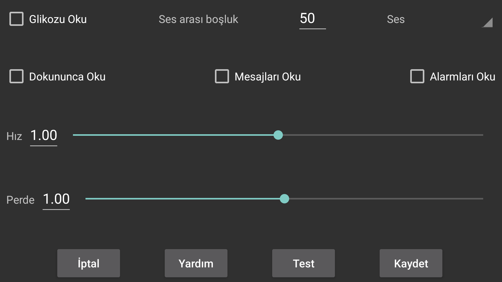

Glikoz değerleri geldiğinde okur.
Ses arası boşluk: Juggluco'nun bir sonraki glikoz değerini söylemeden önce kaç saniye beklemesi gerektiğini belirtir. Glikoz değerleri geldiklerinde hemen söylenir. Büyük bir değer girildiğinde, Juggluco bu zaman periyodu içerisinde gelen glikoz değerlerini atlayacaktır.
Ses: Olası konuşmacılar listesinden bir konuşmacı seçer.
Hız: Daha yüksek sayı daha hızlı konuşma anlamına gelir.
Perde: Daha yüksek bir sayı daha yüksek bir ses perdesi anlamına gelir.
Test: Son glikoz değerini söyler.
Bazı telefonlarda metinden sese Android ayarlarının çalışması için değiştirilmesi gerekir. Bazen bir dilin verilerinin yüklenmesi veya yapılandırmanın değiştirilmesi gerekir. Samsung telefonlarda farklı sesler arasından seçim yapmak için "Samsung metinden sese motoru" yerine "Google metinden sese" ayarlanması gerekir. Bu seçeneklere Android ayarlarında metinden sese araması yapılarak veya Dil ve Giriş > Gelişmiş > Metinden Sese giderek ulaşılabilir. Burada "Google'ın Konuşma Hizmetleri"ni seçebilir ve ses verilerini yükleyebilirsiniz. Diğer telefonlarda Sistem Ayarları > Erişilebilirlik > Görüntü > Metinden Konuşmaya Ayarları altındadır.
Dokununca Oku açıldığında, dokunulan yerdeki değeri okur:
Mevcut glikoza dokunmak,
Grafik noktalarına ve tarama noktalarına dokunmak,
Miktarlara dokunmak,
Sol üst ve sağ üst köşelere dokunulduğunda grafiğin o noktasının tarihi söylenir,
Bir menü öğesine uzun süre basmak,
Miktarlar listesindeki bir miktara uzun süre basmak. (orta sol menü > liste)
Ekranda geçici olarak görünen metin mesajlarını ve taramanın sonucunu (hata mesajları ve glikoz değerini) okur.
Düşük ve Yüksek glikoz alarmları sırasında glikoz seviyesini söyler. Hem alarmın başlangıcında hem de alarmın durdurulduğu anda okunur.